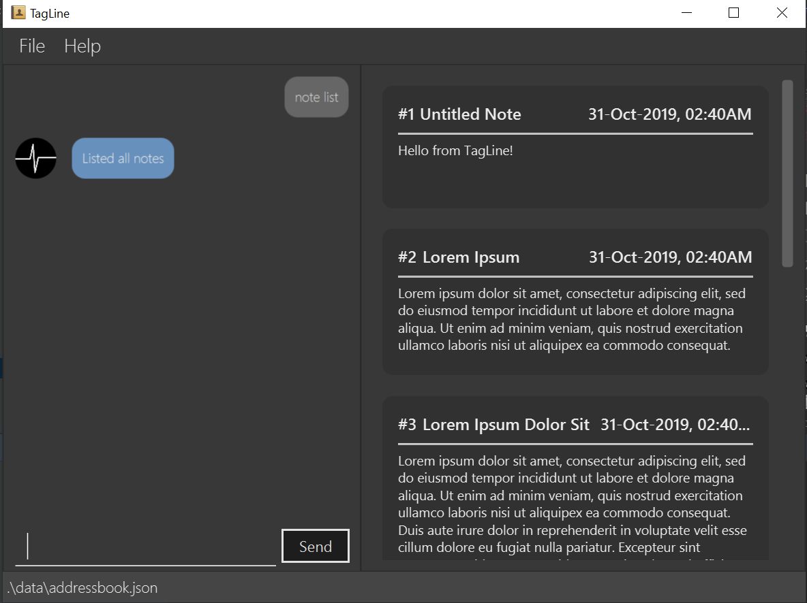

About the project
My team of 5 software engineering students and I were tasked with enhancing a basic command line interface desktop address book application for our Software Engineering project.
We chose to morph it into a note management application called Tagline. This enhanced application enables students to take notes easily and associate them with contacts.
Below is a screenshot of our project:

My main role was to create a contact profile feature to display notes that are associated with a contact along with other information that are stored about the contact (e.g. email and phone number).
The following sections illustrate some more specific enhancements I have made, as well as some relevant documentation in the user and developer guides related to these enhancements.
Summary of contributions
-
Major enhancement: I added the ability for user to associate notes with contacts and display contact profile.
-
What it does:
-
User can create association between a contact and a note by tagging the note with contact or group tags that represent the contact.
-
When a user uses
contact showcommand, there will be a view to display contact information (e.g. name and email) and all notes that are associated to that contact.
-
-
Justification: This feature benefits users because they can easily view all notes that are related with a contact.
-
Highlights:
-
There were challenging design decisions about the data to be stored for contact and group tags because they inherit the same tag superclass but do not have any shared attributes.
-
To standardize with note filtering implementation, the contact id that is specified through the
contact showcommand will be translated into multiple tags that represent the contact. -
The GUI for contact profile is like a combination of both contact and note GUIs.
-
-
-
Minor enhancement: I added a command to list all tags that have been used in Tagline.
-
What it does: Every time a user enters a valid tag, it will be recorded into the tag book which serves as a history of tags used.
-
Justification: This feature benefits forgetful users to view tags that they have used previously.
-
Highlights:
-
This enhancement added a new command type with
tagas its prefix. -
The implementation was challenging as it added additional complexity to the application to have a separate parser, command, model, and storage for tags.
-
-
Credits: The architecture and code of
tag listcommand was reused and morphed from AddressBook command.
-
-
Code contributed: [RepoSense report]
-
Other contributions:
-
Project management:
-
Enhancements to existing features:
-
Community:
-
Contributions to the User Guide
Given below are sections I contributed to the User Guide. They showcase my ability to write documentation targeting end-users. |
Display the profile of a person: show
Displays a contact profile that contains information and list of notes that are associated with a given contact id.
Format:
contact show CONTACT_ID
Example:
-
Suppose you are interested to know information and notes that are associated with your contact
Alex Yeohwhich is stored with a contact id equals to1in Tagline. In addition, suppose that Tagline currently stores the following data:Figure 1. List of all contacts that are stored by Tagline. Figure 2. List of all groups that are stored by Tagline.Figure 3. List of all notes that are stored by Tagline.
Figure 2. List of all groups that are stored by Tagline.Figure 3. List of all notes that are stored by Tagline. -
Instead of checking association between notes and contacts one by one, you can just enter the following command:
contact show 1Figure 4. Entering the command -
This command allows you display a profile for a contact with id equals to
1. The profile contains basic information about a contact (i.e. name, email, phone number, address, and description) and list of notes that are associated with it.Figure 5. Command executed, contact profile displayed
Tag a note with a contact tag
Contact tag is a tag of the form @CONTACT_ID where CONTACT_ID could be substituted with any non-negative integer with
at most 8 digits.
Example: @12345, @00001, @2
By tagging a note with a contact tag, user can easily find all notes related to a certain contact.
Here is an example of tagging a note with a contact tag
-
Enter the command
note tag 1 --t @2into the command box. -
Send the command and you will be able to see the tag in the note view.
List tags: list
Lists all valid tags that have ever been associated with your notes. A tag will appear in this list if it has been successfully used to tag a note previously. However, if a tag is no longer valid, it will be automatically removed from the list. Here are the conditions for a tag to be marked as invalid: - The tag is considered as a contact tag and the referenced contact is removed from Tagline. - The tag is considered as a group tag and the referenced group is removed from Tagline.
- NOTE
-
if you untag a note, it will still appear in this list. The tag list serves as a history to remind you of tags that you can use.
Format:
tag list
Example:
-
Suppose you want to know tags that you have used previously and still valid.
You can just use the following command:tag list. Figure 6. Command executed, list of tags displayed
Figure 6. Command executed, list of tags displayed
Contributions to the Developer Guide
Given below are sections I contributed to the Developer Guide. They showcase my ability to write technical documentation and the technical depth of my contributions to the project. |
Contact Profile feature
Description
The user can view all notes that are associated with a certain contact with contact profile feature. A note is considered to be associated with a contact X if it satisfies one of the following criteria:
-
The note is tagged with a contact tag that represents X.
-
The note is tagged with a group tag where the represented group has X as one of its members.
This feature takes advantage of the existing note tag command by having these two types of tags:
-
Contact tag:
-
Use
@symbol as the tag prefix. -
Represents a contact using its id.
-
Usage example:
@12345. This represents a contact with id12345.
-
-
Group tag:
-
Use
%symbol as the tag prefix. -
Represents a group using its name.
-
Usage example:
%cs2103t. This represents a group with namecs2103t.
-
The user can use contact show command to display the profile of a contact.
A contact profile contains all the stored information (e.g. email and address) and notes that are associated with that contact.
Implementation
The tags that represent contact and group are facilitated by the
ContactTag and
GroupTag classes.
Whenever a user uses note tag command to tag a note with any type of tag, part of the input that
represents the value of tag (i.e. follows --t TAG format) will be passed into
TagParserUtil. The parser will
handle the translation based on the first non-whitespace character into a
Tag object, which is possible to be either
ContactTag or GroupTag.
Meanwhile, the mechanism to display a contact profile is facilitated by the
ShowContactCommand class.
This command takes a contact id as parameter and stores it inside the object. Upon execution,
the command will ask Model for all groups that
contain the given contact as one of their members. Afterward, it will filter notes based on contact id and
all the group names that are converted into Tag objects.
Parsing for contact and group tags
Parsing for contact and group tags are handled by
TagParserUtil as described
in the tagging feature section. Differences between input format with other type of tag (i.e. hash tag) is only the
first character where contact tag uses @ symbol and group tag uses % symbol.
However, the main difference is in the implementation of
Tag#isValidInModel, which is an abstract method that needs
to be implemented by every concrete subclass of Tag.
The following are how this method is implemented in contact and note tags:
-
Contact tag determines its validity in the model by calling
Model#findContact, which takes aContactIdas parameter and returns an optional object ofContactthat has the specified contact id. If such contact object exists, a contact tag is considered valid. -
Group tag determines its validity in the model by calling
Model#hasGroupName, which takes aGroupNameas parameter and returns a boolean whether such group name exists in the data stored by Tagline or not.
Creating the command
Given below is an example scenario where the user enters a command to show a contact profile.
Step 1: Similar to other contact commands, the user command is first passed to TaglineParser to identify its type
until it finally arrives at ShowContactParser which will create the command object. The ShowContactParser also checks
the input arguments to make sure it follows the basic format.
ShowContactCommandExecuting the command
When executing of ShowContactCommand,
there will be an initial check whether the provided contact id is valid or not by calling
Model#findContact similar with checking validity for contact tag.
If the provided contact id is invalid (e.g. non existing contact), the execution will stop and directly return a
CommandResult which informs about the error.
Suppose now we only consider the contact show command that is provided with valid contact id. During execution, it will
translate the contact id into
ContactIdEqualsSearchIdPredicate and
NoteContainsTagsPredicate objects.
Afterwards, those predicate will be used to update the observable contact and note list, by calling
Model#updateFilteredContactList and
Model#updateFilteredNoteList.
contact show command.During translation from contact id to multiple tags, the command objects will call
Model#findGroupsWithMember to get all groups that contain
the specified contact id as one of its members. Afterwards, it creates a single array of tags that represent all tags
that are associated with the contact id.
A successful execution of ShowContactCommand
will return a CommandResult that indicates
a view change into ContactProfileResultView.
The result view for contact profile observes the changes on observable contact and note lists to update accordingly.
Contact Logic component

-
Contact Logicis a sub-component ofLogic. -
TaglineParserwill pass a user input that can be classified as a contact command (i.e. has "contact " prefix), to theContactCommandParserwithout including the "contact" keyword, e.g.TaglineParserwill only pass "create --n Bob" instead of "contact create --n Bob". -
ContactCommandParseridentifies the type of contact command and passes the argument string to the respective command parser. For example,ContactCommandParserwill pass "--n Bob" toCreateContactParserif it receives "create --n Bob" as an input. -
This results in a
ContactCommandobject which is returned to theLogicManager. -
The command execution can affect the
ContactModel.
Given below is the Sequence Diagram for interactions within the Logic component for the
execute("contact create --n Bob") API call.

contact create --n Bob CommandTag Storage component

API : TagBookStorage.java
The TagStorage component,
-
can save
Tagobjects in json format and read it back. -
can save the Tag Book data in json format and read it back.